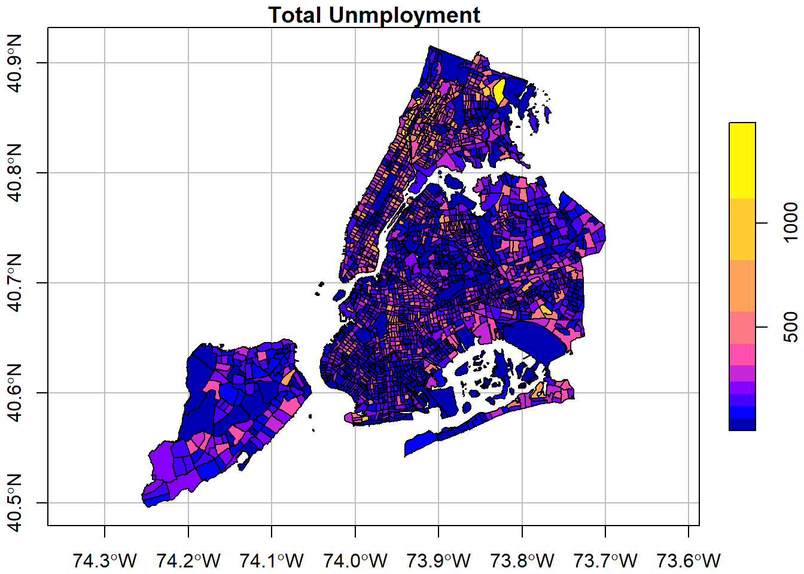
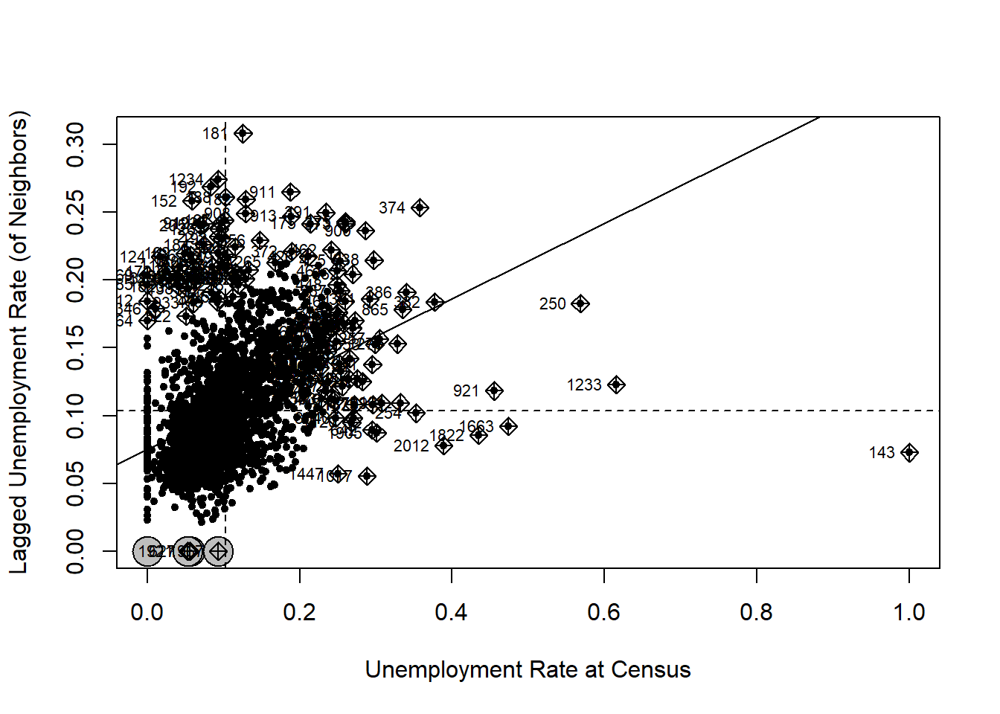
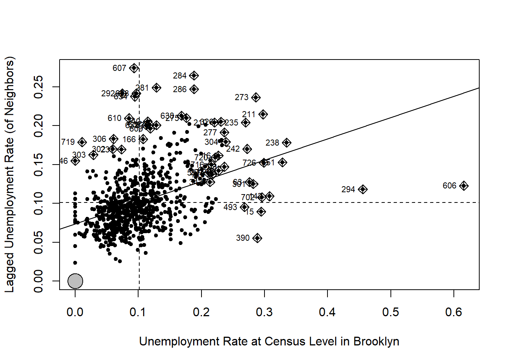
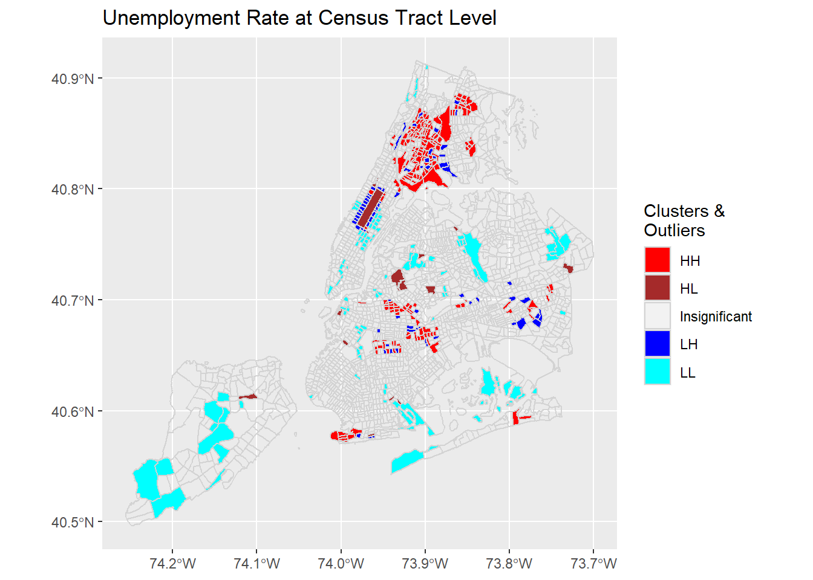
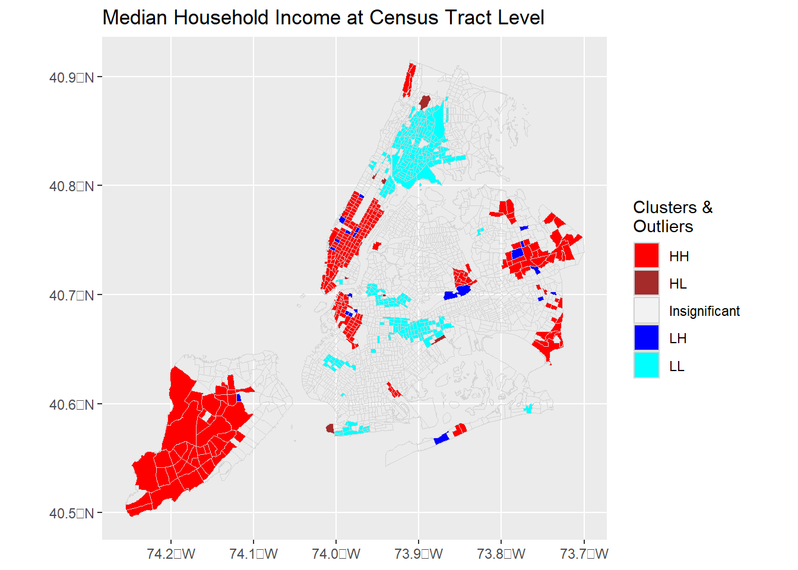
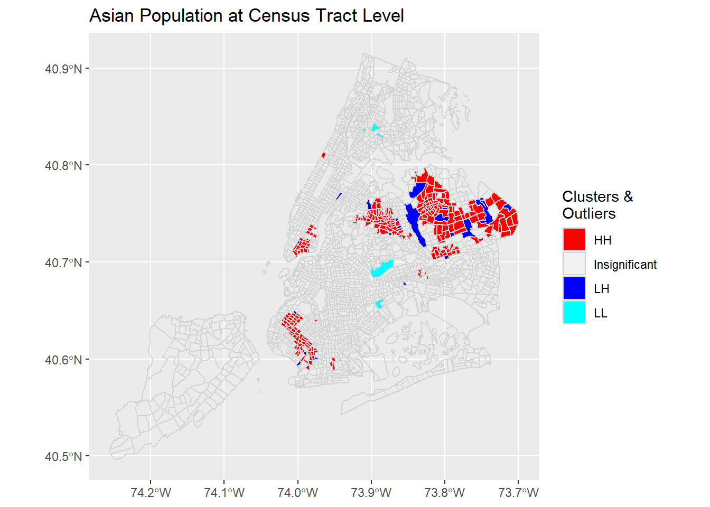
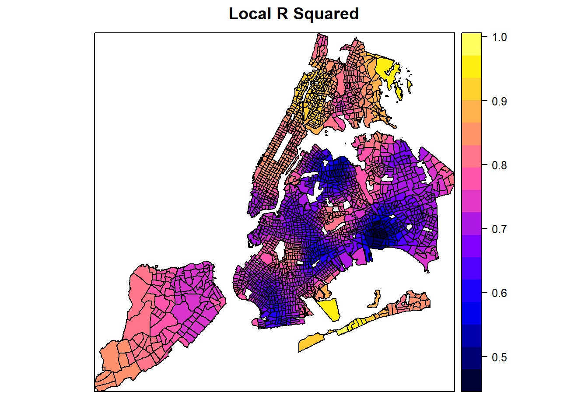
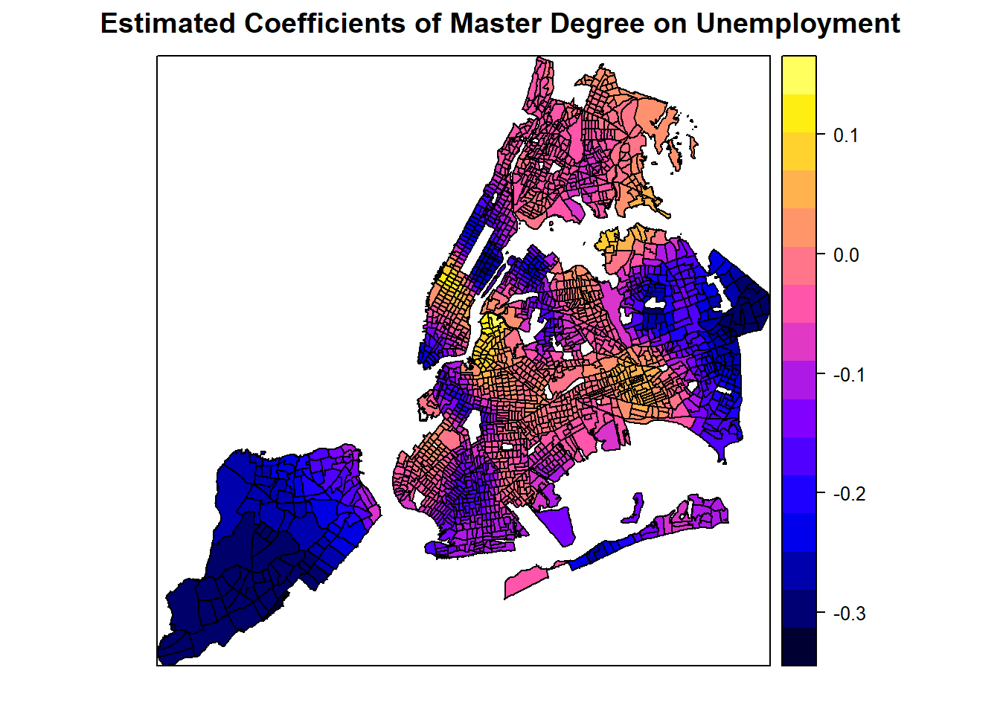
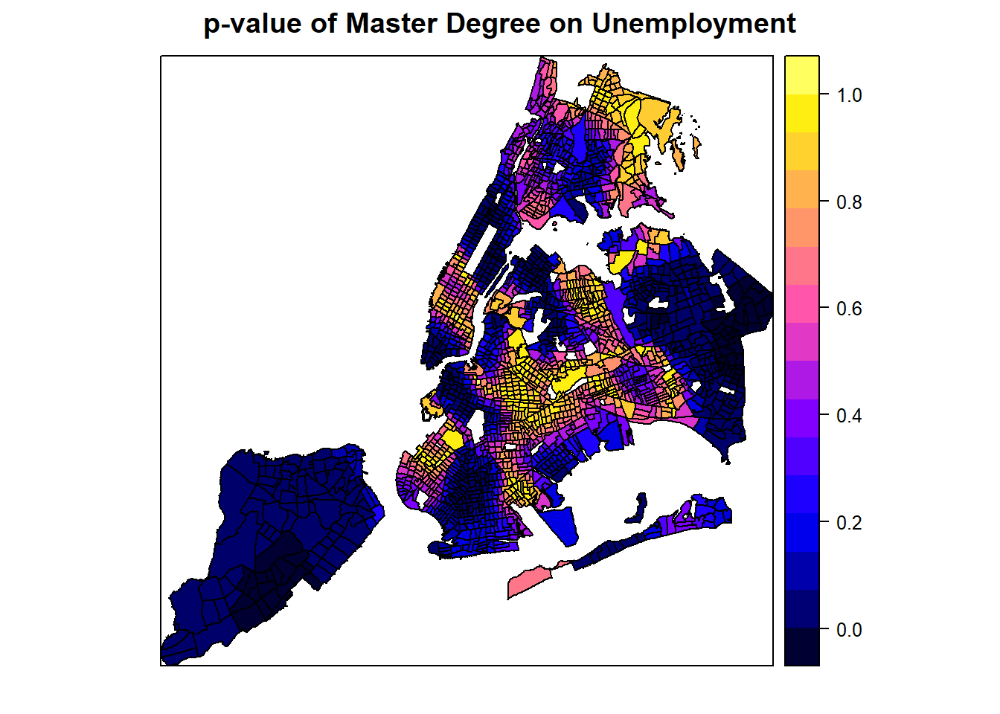
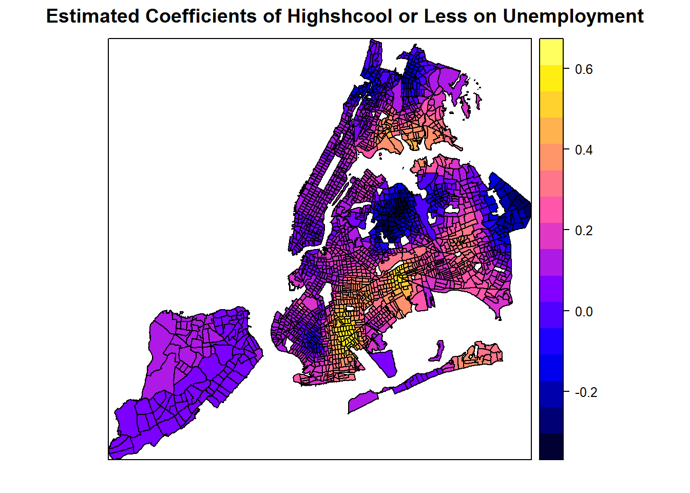

Chapter 4 Spatial Regression in R
Learning Objectives
- Describe Spatial Autocorrelation
- Calculate Global and Local Indicators of Spatial Autocorrelation
- Apply Spatial Error and Spatial Lag Models to address spatial autocorrelation
- Explore Spatial Heterogeneity with Geographically Weighted Regression
4.1 Spatial Autocorrelation
Most statistical methods are based on certain assumptions such as that the samples are independent of each other. Geographic phenomena, however, are all related to each other as Waldo R. Tobler’s First Law of Geography states: Everything is related to everything else, but near things are more related than distant things.
“In spatial data, it is often the case that some or all outcome measures exhibit spatial autocorrelation. This occurs when the relative outcomes of two points is related to the distance between them or two polygons share boundaries. When analyzing spatial data, it is important to check for autocorrelation. If there is no evidence of spatial autocorrelation, then proceeding with a standard approach is acceptable. However, if there is evidence of spatial autocorrelation, then one of the underlying assumptions of standard non-spatial analyses may be violated and the results may not be valid.”
“Spatial autocorrelation measures how similar or dissimilar objects are in comparison with close objects or neighbors.” Spatial autocorrelation can be measured globally or locally.
4.1.1 Global Indicators of Spatial Autocorrelation
While there are many methods to indicate global spatial autocorrelation, the Moran’s I is one of the most widely used.
Moran’s I
- Positive spatial autocorrelation
- values are similar to their neighbors or other close objects
- clusters of similar values on the map
- Zero or no spatial autocorrelation
- random values of close objects or neighbors
- no clear pattern visually
- Negative spatial autocorrelation
- values are dissimilar to their neighbors or close objects
- dispersed patterns of values on the map
- checker board style for polygons
FIGURE 4.1: Global Spatial Autocorrelation
First, let us load the data into a sf object. The data is about education and socio-demographic characteristics for New York City Census tracts compiled from American Community Survey 2008-2012, US Census Bureau. It is available at GeoDa Data Repository.
# Download and unzip the data. Skip this if you downloaded the data from GeoDa.
#download.file("http://www.geo.hunter.cuny.edu/~ssun/R-Spatial/data/NYC.zip", "NYC.zip");
#unzip("NYC.zip", exdir = "data")
# Read the data
sf::st_read('./data/NYC/NYC_Tract_ACS2008_12.shp') -> nycDat
# Set the CRS ID
sf::st_crs(nycDat) <- 4326;
# Check data
head(nycDat);
str(nycDat);
names(nycDat)
# Simple plot to confirm
plot(nycDat['popunemplo'], graticule= sf::st_crs(4326),
main='Total Unmployment', breaks="jenks", axes=TRUE)
With the spatial object, we can run the global Moran’s I test. In order to run that, we need to prepare a list of weights based on neighboring relationships. Essentially, we want to see if the unemployment rate at a census tract is similar to or dissimilar to its neighbors. The spdep::poly2nb produces such neighboring relationships and then spdep::nb2listw turns them into weights. Depending on the parameters to those functions, neighbors get higher weights and non-neighbors get low or zero weights.
For point type of data, spdep::knearneigh and spdep::knn2nb can construct the weights for neighbors. And spdep::grid2nb can do so for raster data. Alternatively, spdep::graph2nb can produce neighbors for point data using graphs.
# use spdep package to test (global autocorrelation)
# spdep::moran, spdep::moran.test
# The zero.policy = TRUE allows zero-length weights vectors
nycDat %>% spdep::poly2nb(c('cartodb_id')) %>%
spdep::nb2listw(zero.policy = TRUE) -> nycNbList
nycNbList %>%
spdep::moran.test(nycDat$UNEMP_RATE, ., zero.policy = TRUE)#>
#> Moran I test under randomisation
#>
#> data: nycDat$UNEMP_RATE
#> weights: . n reduced by no-neighbour observations
#>
#>
#> Moran I statistic standard deviate = 22.049, p-value < 2.2e-16
#> alternative hypothesis: greater
#> sample estimates:
#> Moran I statistic Expectation Variance
#> 0.2748112287 -0.0004625347 0.0001558661The Moran’s I test shows a positive statistic of 0.275. And it is also statistically significant with a near zero p-value. Because the p-value < 0.01, we are 99% confident that the unemployment rates are not spatially independent from those in their neighboring census tracts. And a positive Moran’s I implies the unemployment rate of a census tract tends to be similar to its neighboring tracts, which is what we expect.
The Moran scatter-plot can offer more details than the single statistic, which also helps us understand the local Moran’s I in the next section.
spdep::moran.plot(nycDat$UNEMP_RATE,
nycNbList,
zero.policy = TRUE,
xlab = 'Unemployment Rate at Census',
ylab = 'Lagged Unemployment Rate (of Neighbors)',
pch=20)
To better examine the concept, let us make a simpler case by filtering and choosing data in Brooklyn only.
nycDat %>% dplyr::filter(boroname == 'Brooklyn') -> brklnDat
brklnDat %>%
spdep::poly2nb(c('cartodb_id')) %>%
spdep::nb2listw(zero.policy = TRUE) %>%
spdep::moran.plot(brklnDat$UNEMP_RATE, .,
zero.policy = TRUE,
xlab = 'Unemployment Rate at Census Level in Brooklyn',
ylab = 'Lagged Unemployment Rate (of Neighbors)',
pch=20)
On the X axis are the standardized unemployment rate, whose mean value is about 0.1. The Y axis is the spatially lagged unemployment rate, which we can interpret as the unemployment rate around a census tract. Each point in the scatter plot is a census tract. Its X value is its real unemployment rate and Y is the unemployment rate estimated from its neighbors.
The two dashed lines in the figure divide the plot into four quadrants. All the points in the upper right quadrant have higher-than-mean unemployment rates. Their neighbors also have higher-than-mean rates. The points in the bottom left quadrant have lower-than-mean values, both for census tracts and their neighbors. By contrast, the census tracts that fall into the bottom right quadrant have high-than-median values but their neighbors have lower-than-mean values. Similarly, those in the upper left quadrant have lower-than-mean values but their neighbors have high-than-mean values.
The solid line in the plot indicates in the Moran’s I statistic. It goes though the mean values and its slope is exactly the Moran’s I. Obviously, a upward slope means a positive autocorrelation and downward slope means a negative autocorrelation.
4.1.2 Local Indicators of Spatial Autocorrelation
To examine spatial autocorrelation locally, we can use Local Moran’s I or Local Indicators of Spatial Association (LISA), among others.
FIGURE 4.2: Global Spatial Autocorrelation
LISA can help identify clusters of high or low values as well as outliers that are surrounded by opposite values. As explained above, we could identify HH (high values surrounded by high values), LL (low values surrounded by low values), HL (high values surrounded by low values), and LH (Low values surrounded by high values).
# use spdep package to test (global autocorrelation)
# spdep::localmoran, spdep::localmoran.exact
# localmoran result:
## High positive Ii means simlar values (either high or low clusters)
## Low negative Ii means dissimilar values (outliers)
##
lisaRslt <- spdep::localmoran(nycDat$UNEMP_RATE, nycNbList,
zero.policy = TRUE, na.action = na.omit)
# The dimension of LISA result and the orignal sf object
dim(lisaRslt); dim(nycDat);#> [1] 2166 5#> [1] 2166 114# some results
head(lisaRslt)#> Ii E.Ii Var.Ii Z.Ii Pr(z != E(Ii))
#> 1 0.00000000 0.000000e+00 0.00000000 NaN NaN
#> 2 -0.04952833 -5.118754e-05 0.03692135 -0.2574932 0.79679806
#> 3 -0.43545072 -5.322679e-04 0.23002975 -0.9068090 0.36450780
#> 4 0.65905181 -1.220423e-03 0.87925671 0.7041500 0.48133936
#> 5 0.09599460 -2.501648e-05 0.01352731 0.8255708 0.40904763
#> 6 0.54067850 -2.494425e-04 0.10783185 1.6472742 0.09950171The columns in the LISA results have specific meanings.
| Column | Meaning |
|---|---|
| Ii | local moran statistic |
| E.Ii | expectation of local moran statistic |
| Var.Ii | variance of local moran statistic |
| Z.Ii | standard deviate of local moran statistic |
| Pr(z > 0) | p-value of local moran statistic |
The combined information allows for a classification of the significant locations as high-high and low-low spatial clusters, and high-low and low-high spatial outliers. It is important to keep in mind that the reference to high and low is relative to the mean of the variable, and should not be interpreted in an absolute sense.
— GeoDa
First, using the p-value, we can determine whether we can draw statistically significant conclusions for the existence of clusters or outliers around those spatial features. If the p-vale >= signficance level such as p >= 0.05, they could be labeled insignificant and we would not know if they are clusters or outliers. For those significant features, that is p < 0.05, we need to identify if they are clusters or outliers, which can be identified using Ii. If Ii is positive, it would be a cluster (similar to nearby or neighboring values); otherwise, it would be a outlier (very different from nearby or neighboring values). Then, it is very easy to determine if it is a high or low value relative to the mean.
# Now we can derive the cluster/outlier types (COType in ArcGIS term) for each spatial feature in the data
significanceLevel <- 0.05; # 95% confidence
meanVal <- mean(nycDat$UNEMP_RATE);
lisaRslt %<>% tibble::as_tibble() %>%
magrittr::set_colnames(c("Ii","E.Ii","Var.Ii","Z.Ii","Pr(z > 0)")) %>%
dplyr::mutate(coType = dplyr::case_when(
`Pr(z > 0)` > 0.05 ~ "Insignificant",
`Pr(z > 0)` <= 0.05 & Ii >= 0 & nycDat$UNEMP_RATE >= meanVal ~ "HH",
`Pr(z > 0)` <= 0.05 & Ii >= 0 & nycDat$UNEMP_RATE < meanVal ~ "LL",
`Pr(z > 0)` <= 0.05 & Ii < 0 & nycDat$UNEMP_RATE >= meanVal ~ "HL",
`Pr(z > 0)` <= 0.05 & Ii < 0 & nycDat$UNEMP_RATE < meanVal ~ "LH"
))
# Now add this coType to original sf data
nycDat$coType <- lisaRslt$coType %>% tidyr::replace_na("Insignificant")
ggplot(nycDat) +
geom_sf(aes(fill=coType),color = 'lightgrey') +
scale_fill_manual(values = c('red','brown','NA','blue','cyan'), name='Clusters & \nOutliers') +
labs(title = "Unemployment Rate at Census Tract Level")
From the plot, it is clear that no outliers are present in the unemployment distribution at 95% confidence level. In other words, if a census tract has high or low unemployment rate, its neighborhoods are unlikely to have an opposite low or high rates. This is probably an indicator of socioeconomic segregation, which is not surprising to local residents.
The HH, LL clusters suggest that there are local clusters of high unemployment areas like Bronx and Coney Island. Similarly, there are also clusters of low unemployment areas such as upper west and upper east areas in Manhattan.
Obviously, the local Moran’s I or LISA provides more detailed and local information about spatial autocorrelation. More importantly, they can identify those local clusters (hotspots, coldspots) and outliers.
A few more examples from the same dataset.
# Define this as a function, which could save some space.
plotCOType <- function(varName, titleText, cols=1:5) {
varVals <- nycDat[[varName]] %>% as.character() %>% as.numeric()
lisaRslt <- spdep::localmoran(varVals, nycNbList,
zero.policy = TRUE, na.action = na.exclude)
significanceLevel <- 0.05; # 95% confidence
meanVal <- mean(varVals, na.rm=TRUE);
lisaRslt %<>% tibble::as_tibble() %>%
magrittr::set_colnames(c("Ii","E.Ii","Var.Ii","Z.Ii","Pr(z > 0)")) %>%
dplyr::mutate(coType = dplyr::case_when(
`Pr(z > 0)` > 0.05 ~ "Insignificant",
`Pr(z > 0)` <= 0.05 & Ii >= 0 & varVals >= meanVal ~ "HH",
`Pr(z > 0)` <= 0.05 & Ii >= 0 & varVals < meanVal ~ "LL",
`Pr(z > 0)` <= 0.05 & Ii < 0 & varVals >= meanVal ~ "HL",
`Pr(z > 0)` <= 0.05 & Ii < 0 & varVals < meanVal ~ "LH"
))
# Now add this coType to original sf data
nycDat$coType <- lisaRslt$coType %>% tidyr::replace_na("Insignificant")
ggplot(nycDat) +
geom_sf(aes(fill=coType),color = 'lightgrey') +
scale_fill_manual(values = c('red','brown','NA','blue','cyan')[cols], name='Clusters & \nOutliers') +
labs(title = titleText)
}
plotCOType('medianinco', "Median Household Income at Census Tract Level")
plotCOType('asian', 'Asian Population at Census Tract Level', c(1,3,4,5))
Like many other spatial measures, global and local Moran’s I are sensitive to geographic scales. While no outliers exist at census tract level for these variables, they may surface when being examined at a coarser scale such as the neighborhood level.
4.2 Spatial Error and Lag Models
With the presence of spatial autocorrelation, we need to address its possible influence on simple linear regression models that assume spatial independence. Spatial regression models are specifically developed to achieve this.
Spatial regression models are statistical models that account for the presence of spatial effects, i.e., spatial autocorrelation (or more generally spatial dependence) and/or spatial heterogeneity. With R, we can run Ordinary Least Squares models using
lmor other generalized linear regression usingglm. Usingspdeppackage, we can also obtain spatial diagnostics like Moran’s I. While there are many other options, we can usespdepto estimate a model with a spatially lagged dependent variable (spatial lag model) and a spatial autoregressive process for the error term (spatial error model).— Adapted from GeoDa documentation
4.2.1 Spatial Error Model
Spatial error autocorrelation arises if error terms are correlated across observations, i.e., the error of an observation affects the errors of its neighbors. It is similar to serial correlation in time series analysis and leaves OLS coefficients unbiased but renders them inefficient. Because it’s such a bothersome problem, spatial errors is also called “nuisance dependence in the error.”
There are a number of instances in which spatial error can arise. For example, similar to what can happen in time series, a source of correlation may come from unmeasured variables that are related through space. Correlation can also arise from aggregation of spatially correlated variables and systematic measurement error.
So what to do if there is good reason to believe that there is spatial error? Maybe the most famous test is Moran’s I which is based on the regression residuals and is also related to Moran’s scatterplot of residuals which can be used to spot the problem graphically. There are other statistics like Lagrange multiplier and likelihood ratio tests, and each of them has different ways of getting at the same problem. If there is good reason to believe that spatial error is a problem, then the way forward is either model the error directly or to use autoregressive methods.
In any case it’s probably a good idea to assess whether spatial error might apply to the research problem. Because of it’s effect on OLS, there might be a better way to estimate the coefficients that we are interested in, and the results might improve quite a bit.
— James Greiner, Harvard Social Science Statistics Blog
The spatial error model handles the spatial autocorrelation in the residuals. The idea is that such errors (residuals from regression) are autocorrelated in that the error from one spatial feature can be modeled as a weighted average of the errors of its neighbors. In other words, such errors have spatial autocorrelation. This model can be expressed as:
\[ {\mathbf y} = {\mathbf X}{\mathbf \beta} + {\mathbf u}, \qquad {\mathbf u} = \lambda_{\mathrm{Err}} {\mathbf W} {\mathbf u} + {\mathbf \varepsilon} \] where \({\mathbf y}\) is an \((N \times 1)\) vector of observations on a response variable taken at each of \(N\) locations, \({\mathbf X}\) is an \((N \times k)\) matrix of covariates, \({\mathbf \beta}\) is a \((k \times 1)\) vector of parameters, \({\mathbf u}\) is an \((N \times 1)\) spatially autocorrelated disturbance vector, \({\mathbf \varepsilon}\) is an \((N \times 1)\) vector of independent and identically distributed disturbances and \(\lambda_{\mathrm{Err}}\) is a scalar spatial parameter.
The following code does an OLS and test whether spatial autocorrelation is present in the residuals.
# Prepare data: covert some factors to numeric values
nycDat %<>% dplyr::mutate(medianage = medianage %>% as.character() %>% as.numeric(),
househol_1 = househol_1 %>% as.character() %>% as.numeric())
# olsRslt <- lm(nycDat$popunemplo ~ nycDat$popinlabou +
# nycDat$onlylessth + nycDat$master +
# nycDat$africaninl + nycDat$asianinlab +
# nycDat$hispanicin + nycDat$medianage,
# data = nycDat)
# summary(olsRslt)
# Create a simple linear regression on unemployed population
olsRslt <- lm(log(popunemplo +1) ~ log(1+popinlabou) +
log(1+onlylessth) + log(1+master) +
log(1+africaninl) + log(1+asianinlab) +
log(1+hispanicin) + nycDat$medianage,
data = nycDat)
summary(olsRslt)#>
#> Call:
#> lm(formula = log(popunemplo + 1) ~ log(1 + popinlabou) + log(1 +
#> onlylessth) + log(1 + master) + log(1 + africaninl) + log(1 +
#> asianinlab) + log(1 + hispanicin) + nycDat$medianage, data = nycDat)
#>
#> Residuals:
#> Min 1Q Median 3Q Max
#> -4.6967 -0.2451 0.0518 0.3223 1.9265
#>
#> Coefficients:
#> Estimate Std. Error t value Pr(>|t|)
#> (Intercept) -1.983558 0.148840 -13.327 < 2e-16 ***
#> log(1 + popinlabou) 0.731806 0.027352 26.755 < 2e-16 ***
#> log(1 + onlylessth) 0.185133 0.015073 12.283 < 2e-16 ***
#> log(1 + master) -0.036226 0.013619 -2.660 0.007876 **
#> log(1 + africaninl) 0.082545 0.005890 14.015 < 2e-16 ***
#> log(1 + asianinlab) -0.015196 0.006458 -2.353 0.018709 *
#> log(1 + hispanicin) 0.040066 0.011579 3.460 0.000551 ***
#> nycDat$medianage 0.003001 0.001888 1.589 0.112124
#> ---
#> Signif. codes: 0 '***' 0.001 '**' 0.01 '*' 0.05 '.' 0.1 ' ' 1
#>
#> Residual standard error: 0.5168 on 2116 degrees of freedom
#> (42 observations deleted due to missingness)
#> Multiple R-squared: 0.6931, Adjusted R-squared: 0.6921
#> F-statistic: 682.8 on 7 and 2116 DF, p-value: < 2.2e-16# Derive the residuals from the regression. Need to handle those missed values
lmResiduals <- rep(0, length(nycDat$popunemplo))
resIndex <- olsRslt$residuals %>% names() %>% as.integer();
lmResiduals[resIndex] <- olsRslt$residuals
# Test if there is spatial autocorrelation in the regression residuals (errors).
nycNbList %>%
spdep::moran.test(lmResiduals, ., zero.policy = TRUE)#>
#> Moran I test under randomisation
#>
#> data: lmResiduals
#> weights: . n reduced by no-neighbour observations
#>
#>
#> Moran I statistic standard deviate = 10.285, p-value < 2.2e-16
#> alternative hypothesis: greater
#> sample estimates:
#> Moran I statistic Expectation Variance
#> 0.1283881833 -0.0004625347 0.0001569522The Moran’s test shows that the residuals from linear regression have statistically significant positive spatial autocorrelation. The Moran’s I is 0.128 and the p-value < 0.01. With that, we can run a spatial error model to take such autocorrelation into account.
# use spdep package to run the spatial error model
# Use spatialreg::errorsarlm to run the same model
serrRslt <- spatialreg::errorsarlm(log(popunemplo +1) ~ log(1+popinlabou) +
log(1+onlylessth) + log(1+master) +
log(1+africaninl) + log(1+asianinlab) +
log(1+hispanicin) + medianage,
data = nycDat,
listw = nycNbList,
zero.policy = TRUE,
na.action = na.omit);
summary(serrRslt)#>
#> Call:spatialreg::errorsarlm(formula = log(popunemplo + 1) ~ log(1 +
#> popinlabou) + log(1 + onlylessth) + log(1 + master) + log(1 +
#> africaninl) + log(1 + asianinlab) + log(1 + hispanicin) +
#> medianage, data = nycDat, listw = nycNbList, na.action = na.omit,
#> zero.policy = TRUE)
#>
#> Residuals:
#> Min 1Q Median 3Q Max
#> -4.526908 -0.244982 0.055031 0.300734 1.897656
#>
#> Type: error
#> Regions with no neighbours included:
#> 289 627 1967
#> Coefficients: (asymptotic standard errors)
#> Estimate Std. Error z value Pr(>|z|)
#> (Intercept) -1.8431148 0.1519117 -12.1328 < 2.2e-16
#> log(1 + popinlabou) 0.7245485 0.0277532 26.1068 < 2.2e-16
#> log(1 + onlylessth) 0.1911611 0.0160471 11.9125 < 2.2e-16
#> log(1 + master) -0.0399508 0.0139103 -2.8720 0.004078
#> log(1 + africaninl) 0.0761078 0.0068356 11.1341 < 2.2e-16
#> log(1 + asianinlab) -0.0115502 0.0070767 -1.6322 0.102646
#> log(1 + hispanicin) 0.0346482 0.0127560 2.7162 0.006603
#> medianage 0.0014076 0.0020147 0.6987 0.484770
#>
#> Lambda: 0.29439, LR test value: 85.367, p-value: < 2.22e-16
#> Asymptotic standard error: 0.03168
#> z-value: 9.2926, p-value: < 2.22e-16
#> Wald statistic: 86.352, p-value: < 2.22e-16
#>
#> Log likelihood: -1564.967 for error model
#> ML residual variance (sigma squared): 0.25155, (sigma: 0.50155)
#> Number of observations: 2124
#> Number of parameters estimated: 10
#> AIC: 3149.9, (AIC for lm: 3233.3)From the AIC, the spatial error model performs much better than the linear model (lower AIC basically means better fit). The \[\lambda\] Lambda value of 0.294 is also statistically significant, suggesting the error term is spatially autoregressive. While the model coefficients do not change much, most of them have higher absolute Z values, meaning more robust estimation with lower variance.
# Derive the residuals from the regression. Need to handle those missed values
seResiduals <- rep(0, length(nycDat$popunemplo))
resIndex <- serrRslt$residuals %>% names() %>% as.integer();
seResiduals[resIndex] <- serrRslt$residuals
# Test if there is spatial autocorrelation in the regression residuals (errors).
nycNbList %>%
spdep::moran.test(seResiduals, ., zero.policy = TRUE) #>
#> Moran I test under randomisation
#>
#> data: seResiduals
#> weights: . n reduced by no-neighbour observations
#>
#>
#> Moran I statistic standard deviate = -0.54661, p-value = 0.7077
#> alternative hypothesis: greater
#> sample estimates:
#> Moran I statistic Expectation Variance
#> -0.0073098388 -0.0004625347 0.0001569199Now, it is rather clear that there is no spatial autocorrelation in the residuals anymore as the Moran’s I is close to zero now. More importantly, the p-value is 0.71, meaning we cannot reject the hypothesis that the Moran’s I is zero.
4.2.2 Spatial Lag Model
A spatial lag is a variable that essentially averages the neighboring values of a location (the value of each neighboring location is multiplied by the spatial weight and then the products are summed). It can be used to compare the neighboring values with those of the location itself. Which locations are defined as neighbors in this process is specified through a row-standardized spatial weights matrix in GeoDa and a list of standardized weights in
spdep. By convention, the location at the center of its neighbors is not included in the definition of neighbors and is therefore set to zero.— Adapted from GeoDa Documentation
For these spatial lags, we can use the spatial lag model to address the spatial autocorrelation in the dependent variable.
\[ {\mathbf y} = \rho_{\mathrm{Lag}} {\mathbf W}{\mathbf y} + {\mathbf X}{\mathbf \beta} + {\mathbf \varepsilon}, \] where \(\rho_{\mathrm{Lag}}\) is a scalar spatial parameter, indicating how much a spatial feature is influenced by its neighbors.
# use spdep package to run the spatial lag model
# spatialreg::lagsarlm
slmRslt <- spatialreg::lagsarlm(log(popunemplo +1) ~ log(1+popinlabou) +
log(1+onlylessth) + log(1+master) +
log(1+africaninl) + log(1+asianinlab) +
log(1+hispanicin) + medianage,
data = nycDat,
listw = nycNbList,
zero.policy = TRUE,
na.action = na.omit);
summary(slmRslt)#>
#> Call:spatialreg::lagsarlm(formula = log(popunemplo + 1) ~ log(1 +
#> popinlabou) + log(1 + onlylessth) + log(1 + master) + log(1 +
#> africaninl) + log(1 + asianinlab) + log(1 + hispanicin) +
#> medianage, data = nycDat, listw = nycNbList, na.action = na.omit,
#> zero.policy = TRUE)
#>
#> Residuals:
#> Min 1Q Median 3Q Max
#> -4.591905 -0.248899 0.053451 0.306993 1.797936
#>
#> Type: lag
#> Regions with no neighbours included:
#> 289 627 1967
#> Coefficients: (asymptotic standard errors)
#> Estimate Std. Error z value Pr(>|z|)
#> (Intercept) -2.4911142 0.1626826 -15.3127 < 2e-16
#> log(1 + popinlabou) 0.7208913 0.0269525 26.7467 < 2e-16
#> log(1 + onlylessth) 0.1810895 0.0148579 12.1881 < 2e-16
#> log(1 + master) -0.0314152 0.0134174 -2.3414 0.01921
#> log(1 + africaninl) 0.0713624 0.0059629 11.9678 < 2e-16
#> log(1 + asianinlab) -0.0150805 0.0063527 -2.3739 0.01760
#> log(1 + hispanicin) 0.0287700 0.0114775 2.5066 0.01219
#> medianage 0.0030659 0.0018591 1.6491 0.09912
#>
#> Rho: 0.14127, LR test value: 54.515, p-value: 1.5421e-13
#> Asymptotic standard error: 0.019469
#> z-value: 7.2563, p-value: 3.979e-13
#> Wald statistic: 52.654, p-value: 3.979e-13
#>
#> Log likelihood: -1580.393 for lag model
#> ML residual variance (sigma squared): 0.25841, (sigma: 0.50834)
#> Number of observations: 2124
#> Number of parameters estimated: 10
#> AIC: 3180.8, (AIC for lm: 3233.3)
#> LM test for residual autocorrelation
#> test value: 31.043, p-value: 2.5237e-08Similarly, the spatial lag model is much better than the linear mode, even though it is not as good as the spatial error model. The spatial lag term \[\rho\] or Rho is also statistically significant.
# Derive the residuals from the regression. Need to handle those missed values
slResiduals <- rep(0, length(nycDat$popunemplo))
resIndex <- slmRslt$residuals %>% names() %>% as.integer();
slResiduals[resIndex] <- slmRslt$residuals
# Test if there is spatial autocorrelation in the regression residuals (errors).
nycNbList %>%
spdep::moran.test(slResiduals, ., zero.policy = TRUE)#>
#> Moran I test under randomisation
#>
#> data: slResiduals
#> weights: . n reduced by no-neighbour observations
#>
#>
#> Moran I statistic standard deviate = 4.7, p-value = 1.301e-06
#> alternative hypothesis: greater
#> sample estimates:
#> Moran I statistic Expectation Variance
#> 0.0584191208 -0.0004625347 0.0001569527The under-performance of spatial lag model is also evident from the Moran’s I test. Residuals from spatial lag model still have statistically significant (p < 0.01) spatial autocorrelation, although the Moran’s I of 0.06 is much smaller than 0.27 of the dependent variable.
In fact, we can combine the spatial error and spatial lag models into a spatial simultaneous autoregression model or “SAC/SARAR” model.
\[ {\mathbf y} = \rho_{\mathrm{Lag}} {\mathbf W}{\mathbf y} + {\mathbf X}{\mathbf \beta} + {\mathbf u}, \qquad {\mathbf u} = \lambda_{\mathrm{Err}} {\mathbf W} {\mathbf u} + {\mathbf \varepsilon} \]
This model can be estimated using spatialreg::sacsarlm but will not be discussed here.
4.3 Spatial Heterogeneity and Spatially Varying Coefficients
Spatial heterogeneity exists when structural changes related to location exist in a dataset. In such cases, spatial regimes might be present, which are characterized by differing parameter values or functional forms (e.g., crime in certain regions might be structurally different from crime in other regions). Spatial heterogeneity can result in non-constant error variance (heteroskedasticity) across areas, especially when scale-related measurement errors are present. It can be difficult to distinguish from spatial dependence.
— GeoDa Documentation
There are two families of models that can nicely address spatial heterogeneity: geographically weighted regression (GWR) and Bayesian hierarchical spatial models. While GWR is more like an exploratory tool than a rigorous statistical analysis, it is rather easy to understand and can produce insightful visualizations.
4.3.1 Geographically Weighted Regression (GWR)
Geographically Weighted Regression (GWR) is one of several spatial regression techniques used in geography and other disciplines to address spatial heterogeneity. GWR evaluates a local model of the variable or process that we are trying to understand or predict by fitting a regression equation to every feature in the dataset. GWR constructs these separate equations by incorporating the dependent and explanatory variables of the features falling within the neighborhood of each target feature or the
knearest neighbors. GWR should be applied to datasets with over several hundred features. It is not an appropriate method for small datasets and does not work with multipoint data.
Geographically Weighted Regression can be used for a variety of applications, including the following:
- Is the relationship between educational attainment and income consistent across the study area?
- Do certain illness or disease occurrences increase with proximity to water features?
- What are the key variables that explain high forest fire frequency?
- Which habitats should be protected to encourage the reintroduction of an endangered species?
- Where are the districts where children are achieving high test scores? What characteristics seem to be associated? Where is each characteristic most important?
- Are the factors influencing higher cancer rates consistent across the study area?
— ArcGIS Documentation
Here we are going to do a basic GWR using the GWmodel package in R. First we need to estimate an optimal bandwidth that will define the local neighborhood for every spatial feature. Then spatial features within the neighborhood will be used to estimate a regression model for that particular feature. There are many different ways to define such “neighborhoods” or bandwidth. The code below is using an “adaptive” neighborhood, which is defined as the k nearest neighbors based on Euclidean distances. But then how do we know how many neighbors we should use for the local regression? Or what is best value for k? GWmodel::bw.gwr can help us search for such an optimal value based on the model fitness. With that bandwidth, we can conduct a basic GWR.
# Remove all the NAs in the dataset
nycDatNoNA <- nycDat %>% tidyr::drop_na()
# Estimate an optimal bandwidth
bwVal <- GWmodel::bw.gwr(log(popunemplo +1) ~ log(1+popinlabou) +
log(1+onlylessth) + log(1+master) +
log(1+africaninl) + log(1+asianinlab) +
log(1+hispanicin) + medianage,
data = nycDatNoNA %>% sf::as_Spatial(),
approach = 'AICc', kernel = 'bisquare',
adaptive = TRUE)#> Take a cup of tea and have a break, it will take a few minutes.
#> -----A kind suggestion from GWmodel development group
#> Adaptive bandwidth (number of nearest neighbours): 1314 AICc value: 3056.162
#> Adaptive bandwidth (number of nearest neighbours): 820 AICc value: 3010.612
#> Adaptive bandwidth (number of nearest neighbours): 513 AICc value: 2977.403
#> Adaptive bandwidth (number of nearest neighbours): 325 AICc value: 2943.909
#> Adaptive bandwidth (number of nearest neighbours): 207 AICc value: 2925.297
#> Adaptive bandwidth (number of nearest neighbours): 136 AICc value: 2944.405
#> Adaptive bandwidth (number of nearest neighbours): 253 AICc value: 2930.353
#> Adaptive bandwidth (number of nearest neighbours): 180 AICc value: 2923.699
#> Adaptive bandwidth (number of nearest neighbours): 162 AICc value: 2928.638
#> Adaptive bandwidth (number of nearest neighbours): 190 AICc value: 2925.533
#> Adaptive bandwidth (number of nearest neighbours): 172 AICc value: 2925.419
#> Adaptive bandwidth (number of nearest neighbours): 183 AICc value: 2923.988
#> Adaptive bandwidth (number of nearest neighbours): 176 AICc value: 2924.437
#> Adaptive bandwidth (number of nearest neighbours): 180 AICc value: 2923.699# Perform a basic GWR
gwr.res <- gwr.basic(log(popunemplo +1) ~ log(1+popinlabou) +
log(1+onlylessth) + log(1+master) +
log(1+africaninl) + log(1+asianinlab) +
log(1+hispanicin) + medianage,
data = nycDatNoNA %>% sf::as_Spatial(),
bw = bwVal, kernel = "bisquare", adaptive = TRUE)#> Warning in proj4string(data): CRS object has comment, which is lost in output; in tests, see
#> https://cran.r-project.org/web/packages/sp/vignettes/CRS_warnings.html# Show the results
print(gwr.res)#> ***********************************************************************
#> * Package GWmodel *
#> ***********************************************************************
#> Program starts at: 2022-03-23 16:41:33
#> Call:
#> gwr.basic(formula = log(popunemplo + 1) ~ log(1 + popinlabou) +
#> log(1 + onlylessth) + log(1 + master) + log(1 + africaninl) +
#> log(1 + asianinlab) + log(1 + hispanicin) + medianage, data = nycDatNoNA %>%
#> sf::as_Spatial(), bw = bwVal, kernel = "bisquare", adaptive = TRUE)
#>
#> Dependent (y) variable: popunemplo
#> Independent variables: popinlabou onlylessth master africaninl asianinlab hispanicin medianage
#> Number of data points: 2115
#> ***********************************************************************
#> * Results of Global Regression *
#> ***********************************************************************
#>
#> Call:
#> lm(formula = formula, data = data)
#>
#> Residuals:
#> Min 1Q Median 3Q Max
#> -4.7298 -0.2514 0.0565 0.3249 2.0892
#>
#> Coefficients:
#> Estimate Std. Error t value Pr(>|t|)
#> (Intercept) -2.621486 0.172640 -15.185 < 2e-16 ***
#> log(1 + popinlabou) 0.856573 0.032845 26.079 < 2e-16 ***
#> log(1 + onlylessth) 0.167166 0.015982 10.459 < 2e-16 ***
#> log(1 + master) -0.061666 0.014385 -4.287 1.89e-05 ***
#> log(1 + africaninl) 0.078297 0.005837 13.415 < 2e-16 ***
#> log(1 + asianinlab) -0.018332 0.006388 -2.870 0.00415 **
#> log(1 + hispanicin) 0.030994 0.011509 2.693 0.00714 **
#> medianage 0.003609 0.001902 1.898 0.05788 .
#>
#> ---Significance stars
#> Signif. codes: 0 '***' 0.001 '**' 0.01 '*' 0.05 '.' 0.1 ' ' 1
#> Residual standard error: 0.5098 on 2107 degrees of freedom
#> Multiple R-squared: 0.6757
#> Adjusted R-squared: 0.6746
#> F-statistic: 627.1 on 7 and 2107 DF, p-value: < 2.2e-16
#> ***Extra Diagnostic information
#> Residual sum of squares: 547.5001
#> Sigma(hat): 0.5090288
#> AIC: 3161.799
#> AICc: 3161.884
#> BIC: 1166.621
#> ***********************************************************************
#> * Results of Geographically Weighted Regression *
#> ***********************************************************************
#>
#> *********************Model calibration information*********************
#> Kernel function: bisquare
#> Adaptive bandwidth: 180 (number of nearest neighbours)
#> Regression points: the same locations as observations are used.
#> Distance metric: Euclidean distance metric is used.
#>
#> ****************Summary of GWR coefficient estimates:******************
#> Min. 1st Qu. Median 3rd Qu. Max.
#> Intercept -7.2771344 -3.2662540 -2.3904552 -1.5407623 0.4646
#> log(1 + popinlabou) 0.0227865 0.7145161 0.8723999 1.0315822 1.7145
#> log(1 + onlylessth) -0.3053821 0.0612402 0.1315848 0.2488254 0.6085
#> log(1 + master) -0.3135134 -0.1358077 -0.0505235 -0.0144470 0.1334
#> log(1 + africaninl) -0.1071455 0.0301272 0.0555869 0.1098297 0.3374
#> log(1 + asianinlab) -0.1755278 -0.0413494 -0.0182863 0.0149573 0.2309
#> log(1 + hispanicin) -0.5906099 -0.0249766 0.0281980 0.0997731 0.4744
#> medianage -0.0522653 -0.0114841 -0.0010550 0.0082988 0.0810
#> ************************Diagnostic information*************************
#> Number of data points: 2115
#> Effective number of parameters (2trace(S) - trace(S'S)): 288.7402
#> Effective degrees of freedom (n-2trace(S) + trace(S'S)): 1826.26
#> AICc (GWR book, Fotheringham, et al. 2002, p. 61, eq 2.33): 2923.699
#> AIC (GWR book, Fotheringham, et al. 2002,GWR p. 96, eq. 4.22): 2651.793
#> BIC (GWR book, Fotheringham, et al. 2002,GWR p. 61, eq. 2.34): 1992.695
#> Residual sum of squares: 391.2425
#> R-square value: 0.768232
#> Adjusted R-square value: 0.7315684
#>
#> ***********************************************************************
#> Program stops at: 2022-03-23 16:41:35While the pseudo-R square values improve a lot from GWR, the most valuable application of GWR outputs is to examine the spatial variations of the estimated model coefficients.
# The gwr.res$SDF is a Spatial*DataFrame that contain all the coefficients estimated
# at each sptial feature. We can simply map it out as a sp object
names(gwr.res$SDF)#> [1] "Intercept" "log(1 + popinlabou)" "log(1 + onlylessth)"
#> [4] "log(1 + master)" "log(1 + africaninl)" "log(1 + asianinlab)"
#> [7] "log(1 + hispanicin)" "medianage" "y"
#> [10] "yhat" "residual" "CV_Score"
#> [13] "Stud_residual" "Intercept_SE" "log(1 + popinlabou)_SE"
#> [16] "log(1 + onlylessth)_SE" "log(1 + master)_SE" "log(1 + africaninl)_SE"
#> [19] "log(1 + asianinlab)_SE" "log(1 + hispanicin)_SE" "medianage_SE"
#> [22] "Intercept_TV" "log(1 + popinlabou)_TV" "log(1 + onlylessth)_TV"
#> [25] "log(1 + master)_TV" "log(1 + africaninl)_TV" "log(1 + asianinlab)_TV"
#> [28] "log(1 + hispanicin)_TV" "medianage_TV" "Local_R2"# Because the spplot cannot handle those unconventional column names, we need to do extra works.
spGWRData <- gwr.res$SDF@data;
spGWRData$coefMaster <- spGWRData$`log(1 + master)`;
# Calculate the p value from (student) t value
spGWRData$pMaster <- 2*pt(-abs(spGWRData$`log(1 + master)_TV`), df = dim(spGWRData)[1] -1)
spGWRData$coefAfrican <- spGWRData$`log(1 + africaninl)`;
spGWRData$coefHighschool <- spGWRData$`log(1 + onlylessth)`
spGWR <- gwr.res$SDF;
spGWR@data <- spGWRData;
# This show how the coefficients of the master degree on unemplyment change over space.
spplot(spGWR, 'Local_R2', main="Local R Squared")
# This show how the coefficients of the master degree on unemplyment change over space.
spplot(spGWR, 'coefMaster', main="Estimated Coefficients of Master Degree on Unemployment")
# But this variable is not signficiant everywhere.
spplot(spGWR, 'pMaster', main="p-value of Master Degree on Unemployment")
# Another factor of highschool
spplot(spGWR, 'coefHighschool', main="Estimated Coefficients of Highshcool or Less on Unemployment")
The SDF object in the gwr.basic resutls contains estimated coefficients, predicted Y calues, coefficient standard errors, and t-values. All these values are organized in a Spatial*DataFrame that can be directly mapped.
From these plots, it seems like a master degree, while helping reduce unemployment overall with statistical significance, may not matter at some places (where p-value is high). Additionally, it can also positively contribute to unemployment at some areas, even though the master degree factor is mostly not significant at those areas. Similarly, the number of population with an education of high school or less in the labor force may positively or negatively contribute to the unemployment, depending on the locations. Clearly, GWR is a powerful exploratory tool as we instantly want to know why such spatial variation exists and what might explain it. Such exploration would continue in advanced R topics, but the book has to stop here.